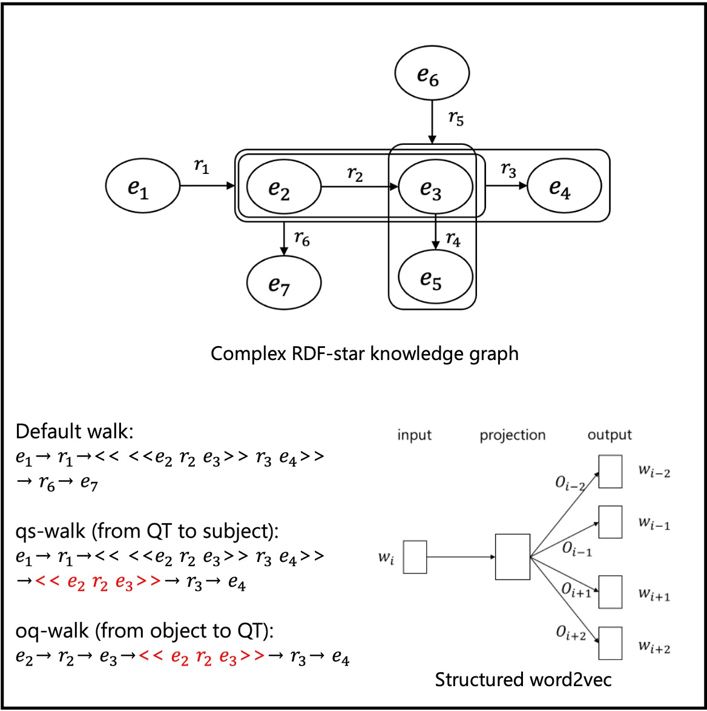

国立研究開発法人産業技術総合研究所(AIST)人工知能研究センター (AIRC)データ知識融合研究チーム( DKI)の 主任研究員として知識グラフやセマンティック技術の研究に取り組んでいます．電気通信大学の連携准教授( 大須賀・田原・清研究室)として学生の研究指導も行っています．また，法政大学理工学部兼任講師(非常勤講師)として セマンティックWebと エージェント技術の講義を担当しています．博士（工学）
Email /
CV /
Bio /
 /
/
 /
/
/
/
 /
/
 /
/
 /
/
 /
/
 /
/

学生の方へ
産総研連携研究室配属に興味のある方はこちらをご覧ください．研究内容や配属希望のご相談はメールにて受け付けています．
{kind=link}
研究
セマンティックWeb，オントロジー，グラフ表現学習，オープンデータなどに関心があります．物理・サイバー世界（非構造化テキスト，半構造化データ，センサー，動画，仮想空間など）からの知識グラフの構築と推論に関する研究成果が多いです．
論文誌 (査読あり)

|
15.
Swe Nwe Nwe Htun, Shusaku Egami, Ken Fukuda SICE Journal of Control, Measurement, and System Integration, to appear, 2024 DOI: https://doi.org/10.1080/18823889.2024.2318848 This study investigates the potential of generating synthetic training data for activities of daily living (ADLs) recognition using the VirtualHome2KG framework. |
|

|
14.
Shusaku Egami, Takanori Ugai, Masateru Oota, Kyoumoto Matsushita, Takahiro Kawamura, Kouji Kozaki, Ken Fukuda IEEE Access, Vol.11, pp.142030-142042, 2023 Code1 / Code2 / Dataset / DOI: https://doi.org/10.1109/ACCESS.2023.3341029 (open access) This study introduces RDF-star2Vec, a novel KGE model designed for RDF-star graphs, which are (recursive) hyper-relational knowledge graphs. In addition, we provide a dataset and a benchmarking framework for data mining tasks focused on complex RDF-star graphs. |

|
13.
Shusaku Egami, Takanori Ugai, Mikiko Oono, Koji Kitamura, Ken Fukuda IEEE Access, Vol.11, pp.23857-23873, 2023 Code / Dataset / DOI: https://doi.org/10.1109/ACCESS.2023.3253807 (open access) We proposed the VirtualHome2KG framework to generate synthetic KGs of daily life activities in virtual space. We also demonstrated the utility and potential of the VirtualHome2KG through several use cases, including the analysis of daily activities by querying, embedding, and clustering, and fall risk detection among older adults based on expert knowledge. |

|
12.
Shusaku Egami, Yasunori Yamamoto, Ikki Ohmukai, Takashi Okumura PLOS ONE, Vol.18, No.3: e0282291, 2023 data / project page / DOI: https://doi.org/10.1371/journal.pone.0282291 (open access) We constructed an ontology, CIRO, which can infer the risk of COVID-19 infection from the action history for the actual operation of tracking and screening of close contacts at public health centers. |

|
11.
Shusaku Egami, Takahiro Kawamura, Kouji Kozaki, Akihiko Ohsuga Data Intelligence, Vol.4, No.1, pp.88-111, 2022 DOI: https://doi.org/10.1162/dint_a_00113 (open access) We extracted urban problem causality from various documents and structured the data as a KG. Then we detected vicious cycles and root problems using SPARQL and SWRL. Furthermore, urban-problem experts evaluated the extracted causal relations. |

|
10.
塚越雄登, 江上周作, 清雄一, 田原康之, 大須賀昭彦 電気学会論文誌Ｃ（電子・情報・システム部門誌）, Information and Systems, Vol.141, No.11, pp.1222-1233, 2021 (in Japanese) DOI: https://doi.org/10.1541/ieejeiss.141.1222 We collected unstructured data from a university campus and integrated it as a knowledge graph based on the proposed ontology. |

|
9.
江上周作, 呂暁東, 古賀禎, 住谷泰人 人工知能学会論文誌, Vol.36, No.1, pp.WI2-F_1-12, 2021.1 (in Japanese) project page / DOI: https://doi.org/10.1527/tjsai.36-1_WI2-F (open access) We developed a reference ontology that enables common situational awareness of spatiotemporal concepts for semantic interoperability in air traffic information management. |

|
8.
Takahiro Kawamura, Shusaku Egami IEEE Transactions on Engineering Management, Vol.68, No.5, 2021 project page / DOI: https://doi.org/10.1109/TEM.2019.2946886 (open access) We proposed a method for creating word and paragraph vectors corresponding to bilingual textual information in the same multidimensional space, aiming to construct a bilingual map of science. |

|
7.
Shusaku Egami, Takahiro Kawamura, Kouji Kozaki, Akihiko Ohsuga International Journal of Smart Computing and Artificial Intelligence, Vol.3, No.1, pp.71-86, 2019 DOI: https://doi.org/10.52731/ijscai.v3.i1.321 (open access) We extracted causal relations using natural language processing and crowdsourcing to construct urban problem Linked Data. |
|
|
6.
Takahiro Kawamura, Katsutaro Watanabe, Naoya Matsumoto, Shusaku Egami, Mari Jibu Scientometrics, Vol.116, pp.941-958, 2022 project page / DOI: https://doi.org/10.1007/s11192-018-2783-x (open access) We proposed a new content-based method of locating research projects in a multi-dimensional space using the word/paragraph embedding techniques. |

|
5.
Shusaku Egami, Takahiro Kawamura, Akihiko Ohsuga IEICE Transactions on Information and Systems, Vol.E101-D, No.1, pp.116-129, 2018 DOI: https://doi.org/10.1587/transinf.2017SWP0010 (open access) We complemented temporal and spatial missing data of the Linked Open Data (LOD) of the problem of illegally parked bicycles using bayesian networks and computational fluid dynamics. |

|
4.
Shusaku Egami, Takahiro Kawamura, Akihiko Ohsuga International Journal of Smart Computing and Artificial Intelligence, Vol.1, No.2, pp.77-93, 2017 DOI: https://doi.org/10.52731/ijscai.v1.i2.99 (open access) We proposed a schema of illegally parked bicycle LOD (IPBLOD) and a methodology of designing LOD schema. |

|
3.
江上周作, 川村隆浩, 清雄一, 田原康之, 大須賀昭彦 人工知能学会論文誌, Vol.31, No.6, pp.AI30-K_1-12, 2016 (in Japanese) DOI: https://doi.org/10.1527/tjsai.AI30-K (open access) We purposed eco-cycle for solving illegally parked bicycles using linked open data. |

|
2.
Shusaku Egami, Takahiro Kawamura, Yuichi Sei, Yasuyuki Tahara, Akihiko Ohsuga Transactions on Large-Scale Data and Knowledge-Centered Systems XXVII, Springer LNCS, Vol.9860, pp.129-141, 2016 DOI: https://doi.org/10.1007/978-3-662-53416-8_8 We built an ecosystem that generates Open Urban Data in Link Data format while complementing missing attribute values. |
|
|
1.
江上周作, 川村隆浩, 藤井章博, 大須賀昭彦 電子情報通信学会論文誌, Vol.J98-D, No.6, pp.992-1004, 2015 (in Japanese) CRES: http://id.nii.ac.jp/1438/00009010/ (open access) DOI: https://doi.org/10.1007/978-3-662-53416-8_8 We constructed a linked open data of industrial parts (screw LOD) to realize a business support agent that applies the screw LOD to the bill of materials (BOM). |
国際会議 (査読あり)
-
Takanori Ugai, Shusaku Egami, Ken Fukuda:
Event Prediction in Event-Centric Knowledge Graph Using BERT , Proceedings of the 2nd International Knowledge Graph Reasoning Challenge in conjunction with 18th IEEE International Conference on Semantic Computing (ICSC2024), to appear, 2024 -
Ken Fukuda, Takanori Ugai, Shusaku Egami, Kyoumoto Matsushita:
Zero-Shot Query Experiments in Knowledge Graph Reasoning Challenge for Older Adults Safety , Proceedings of the 2nd International Knowledge Graph Reasoning Challenge in conjunction with 18th IEEE International Conference on Semantic Computing (ICSC2024), to appear, 2024 -
Swe Nwe Nwe Htun, Shusaku Egami, Takanori Ugai, Yijun Duan, Ken Fukuda:
Exploring Spatial Relation Awareness through Virtual Indoor , Proceedings of the 26th International Conference on Human-Computer Interaction (HCII2024), to appear, 2024 -
Yuki Saito, Shusaku Egami, Yuichi Sei, Yasuyuki Tahara, Akihiko Ohsuga:
An Analysis of Knowledge Representation for Anime Recommendation using Graph Neural Networks , Proceedings of the 16th International Conference on Agents and Artificial Intelligence (ICAART2024), to appear, 2024 -
Jin Aoyama, Takeshi Morita, Takanori Ugai, Shusaku Egami, Ken Fukuda:
Automatic Action Script Generation to Improve Execution Rate based on LLM in VirtualHome , Proceedings of the 12th International Joint Conference on Knowledge Graphs (IJCKG2023), to appear, 2023 -
Yuki Sawamura, Takeshi Morita, Shusaku Egami, Takanori Ugai, Ken Fukuda:
Japanese Pointer Network based Entity Linker for Wikidata , Proceedings of the 12th International Joint Conference on Knowledge Graphs (IJCKG2023), to appear, 2023 -
Yasunori Yamamoto, Shusaku Egami, Yuya Yoshikawa, Ken Fukuda:
Towards Semantic Data Management of Visual Computing Datasets: Increasing Usability of MetaVD , Proceedings of the ISWC 2023 Posters, Demos and Industry Tracks co-located with 22nd International Semantic Web Conference (ISWC2023), to appear, 2023 -
Swe Nwe Nwe Htun, Shusaku Egami, Duan Yijun, Ken Fukuda:
Abnormal Activity Detection based on Place and Occasion in Virtual Home Environments , Proceedings of the 15th International Conference on Genetic and Evolutionary Computing (ICGEC2023), Springer LNEE, vol.1114, pp.193-205, 2023 -
Shusaku Egami, Mikiko Oono, Mai Otsuki, Takanori Ugai, Ken Fukuda:
Analysis of Annotation Quality of Human Activities using Knowledge Graphs , HCI International 2023 Posters: 25th International Conference on Human-Computer Interaction (HCII2023), Proceedings, Part IV, pp.483-489, 2023 -
Kozaki Kouji, Shusaku Egami, Kyoumoto Matsushita, Takanori Ugai, Takahiro Kawamura, Ken Fukuda:
Datasets of Mystery Stories for Knowledge Graph Reasoning Challenge , Joint Proceedings of the ESWC 2023 Workshops and Tutorials co-located with 20th European Semantic Web Conference (ESWC2023), CEUR, Vol.3443, pp.1-15, 2023 -
Swe Nwe Nwe Htun, Shusaku Egami, Ken Fukuda:
A Survey and Comparison of Activities of Daily Living Datasets in Real-life and Virtual Spaces , 2023 IEEE/SICE International Symposium on System Integrations (SII), pp.1-7, 2023 -
Takahiro Kawamura, Shusaku Egami, Kyoumoto Matsushita, Takanori Ugai, Ken Fukuda, Kouji Kozaki:
Contextualized Scene Knowledge Graphs for XAI Benchmarking , Proceedings of the 11th International Joint Conference on Knowledge Graphs (IJCKG2022), pp.64-72, 2022 -
Shuhei Katsushima, Hajime Anada, Shusaku Egami, Ken Fukuda:
A Criminal Detection of Mystery Novel Using the Principal Components Regression Analysis Considering Co-Occurrence Words , Proceedings of the 1st International Workshop on Knowledge Graph Reasoning for Explainable Artificial Intelligence (KGR4XAI2021) co-located with the 10th International Joint Conference on Knowledge Graphs (IJCKG2021), to appear, 2022 -
Satoshi Nishimura, Shusaku Egami, Takanori Ugai, Mikiko Oono, Koji Kitamura, Ken Fukuda:
Ontologies of Action and Object in Home Environment towards Injury Prevention , Proceedings of the 10th International Joint Conference on Knowledge Graphs (IJCKG2021), 2021 -
Shusaku Egami, Satoshi Nishimura, Ken Fukuda, Takanori Ugai, Mikiko Oono, Koji Kitamura, Ken Fukuda:
A Framework for Constructing and Augmenting Knowledge Graphs using Virtual Space: Towards Analysis of Daily Activities , Proceedings of the 33rd IEEE International Conference on Tools with Artificial Intelligence (ICTAI2021), pp.1226-1230, 2021 -
Shusaku Egami, Satoshi Nishimura, Ken Fukuda:
VirtualHome2KG: Constructing and Augmenting Knowledge Graphs of Daily Activities Using Virtual Space , Proceedings of the ISWC 2021 Posters, Demos and Industry Tracks co-located with 20th International Semantic Web Conference (ISWC2021), CEUR, Vol.2980, 2021 (Best Poster Award) -
Kazuyuki Morioka, Xiaodong Lu, Junichi Naganawa, Akinori Murata, Shusaku Egami, Norihiko Miyazaki, Naruto Yonemoto, Akiko Kohmura:
Flight Tests for Expanding AeroMACS Coverage and Air-Ground SWIM Demonstration , Integrated Communications, Navigation and Surveillance Conference (ICNS2021), pp.1-8, 2021 -
Xiaodong Lu, Kazuyuki Morioka, Shusaku Egami, Tadashi Koga, Yasuto Sumiya, Junichi Naganawa, Naruto Yonemoto:
Air/Ground SWIM Integration to Achieve Information Collaborative Environment , Air Traffic Management and Systems IV: Selected Papers of the 6th ENRI International Workshop on ATM/CNS (EIWAC2019), Springer LNEE, vol.731, pp.301-314, 2021 -
Yuto Tsukagoshi, Shusaku Egami, Yuichi Sei, Yasuyuki Tahara, Akihiko Ohsuga:
Ontology-Based Correlation Detection Among Heterogeneous Data Sets , Proceedings of the Third IEEE International Conference on Artificial Intelligence and Knowledge Engineering (AIKE2020), pp.25-32, 2020 -
Shusaku Egami, Xiaodong Lu, Tadashi Koga, Yasuto Sumiya:
Ontology-Based Data Integration for Semantic Interoperability in Air Traffic Management , Proceedings of the 14th IEEE International Conference on Semantic Computing (ICSC2020), pp.295-302, 2021 -
Takahiro Kawamura, Shusaku Egami, Koutarou Tamura, Yasunori Hokazono, Takanori Ugai, Yusuke Koyanagi, Fumihito Nishino, Seiji Okajima, Katsuhiko Murakami, Kunihiko Takamatsu, Aoi Sugiura, Shun Shiramatsu, Shawn Zhang, Kouji Kozaki:
Report on the First Knowledge Graph Reasoning Challenge 2018 - Toward the eXplainable AI System - , Proceedings of the 9th Joint International Semantic Technology Conference (JIST2019), Springer LNCS, Vol.12032, pp.18-34, 2019 -
Shusaku Egami, Xiadong Lu, Tadashi Koga, Yasuto Sumiya:
Enriching Geospatial Representation for Ontology-based Aviation Information Exchange , Proceedings of the 8th IEEE Global Conference on Consumer Electronics (GCCE2019), pp.242-243, 2019 -
Shusaku Egami, Takahiro Kawamura, Akihiko Ohsuga:
Predicting Urban Problems: A Comparison of Graph-based and Image-based Methods , Workshop and Poster Proceedings of the 8th Joint International Semantic Technology Conference (JIST2018), CEUR, Vol.2293, pp.114-117, 2018 -
Takahiro Kawamura, Katsutaro Watanabe, Shusaku Egami, Naoya Matsumoto, Mari Jibu:
Content-based Map of Science using Cross-lingual Document Embedding - A Comparison of US-Japan Funded Projects , Proceedings of the 23rd International Conference on Science and Technology Indicators (STI2018), pp.385-394, 2018 -
Shusaku Egami, Takahiro Kawamura, Kouji Kozaki, Akihiko Ohsuga:
Urban Problem LOD for Understanding the Problem Structure and Detecting Vicious Cycles , Proceedings of the 12th IEEE International Conference on Semantic Computing (ICSC2018), pp.186-193, 2018 -
Takahiro Kawamura, Katsutaro Watanabe, Naoya Matsumoto, Shusaku Egami, Mari Jibu:
Science Graph for characterizing the recent scientific landscape using Paragraph Vectors , Proceedings of the 9th International Conference on Knowledge Capture (K-CAP2017), pp.2:1-2:8, 2017 -
Shusaku Egami, Takahiro Kawamura, Kouji Kozaki, Akihiko Ohsuga:
Linked Urban Open Data Including Social Problems' Causality and Their Costs , Proceedings of the 7th Joint International Semantic Technology Conference (JIST2017), Springer LNCS, Vol.10675, pp.334-349, 2017 Selected for Best Paper Nominee -
Ryohei Kozu, Takahiro Kawamura, Shusaku Egami, Yuichi Sei, Yasuyuki Tahara, Akihiko Ohsuga:
User Participatory construction of Open Hazard Data for Preventing Bicycle Accidents , Proceedings of the 7th Joint International Semantic Technology Conference (JIST2017), Springer LNCS, Vol.10675, pp.289-303, 2017 -
Takahiro Kawamura, Katsutaro Watanabe, Naoya Matsumoto, Shusaku Egami, Mari Jibu:
Science Graph for characterizing the recent scientific landscape , Proceedings of the 16th International Semantic Web Conference (ISWC2017) Poster & Demo Track, CEUR, Vol.1963, 2017 -
Shusaku Egami, Takahiro Kawamura, Kouji Kozaki, Akihiko Ohsuga:
Construction of Linked Urban Problem Data with Causal Relations using Crowdsourcing , Proceedings of the 6th IIAI International Congress on Advanced Applied Informatics (IIAI-AAI2017), pp.814-819, 2017 -
Shusaku Egami, Takahiro Kawamura, Akihiko Ohsuga:
Estimation of Spatio-temporal Missing Data for Expanding Urban LOD , Proceedings of the 6th Joint International Semantic Technology Conference (JIST2016), Springer LNCS, Vol.10055, pp.152-167, 2016 -
Yuri Uehara, Takahiro Kawamura, Shusaku Egami, Yuichi Sei, Yasuyuki Tahara, Akihiko Ohsuga:
Linked Data Collection and Analysis Platform for Music Information Retrieval , Proceedings of the 6th Joint International Semantic Technology Conference (JIST2016), Springer LNCS, Vol.10055, pp.127-135, 2016 -
Shusaku Egami, Takahiro Kawamura, Akihiko Ohsuga:
Estimation of Spatial Missing Data for Expanding Urban LOD , Workshop and Poster Proceedings of the 6th Joint International Semantic Technology Conference (JIST2016), CEUR, Vol.1741, pp.82-85, 2016 -
Yuri Uehara, Takahiro Kawamura, Shusaku Egami, Yuichi Sei, Yasuyuki Tahara, Akihiko Ohsuga:
Linked Data Collection and Analysis Platform of Audio Features , Workshop and Poster Proceedings of the 6th Joint International Semantic Technology Conference (JIST2016), CEUR, Vol.1741, pp.78-81, 2016 -
Shusaku Egami, Takahiro Kawamura, Akihiko Ohsuga:
Building Urban LOD for Solving Illegally Parked Bicycles in Tokyo , Proceedings of the 15th International Semantic Web Conference (ISWC2016), Springer LNCS, Vol.9982, pp.291-307, 2016 -
Shusaku Egami, Takahiro Kawamura, Yuichi Sei, Yasuyuki Tahara, Akihiko Ohsuga:
Schema Design of Illegally Parked Bicycles LOD , Proceedings of the 5th IIAI International Congress on Advanced Applied Informatics (IIAI-AAI2016), pp.692-697, 2016 -
Shusaku Egami, Takahiro Kawamura, Yuichi Sei, Yasuyuki Tahara, Akihiko Ohsuga:
Visualization of Open Urban Data for Illegally Parked Bicycles , CompleXity: Technology for Complex Urban Systems in the 49th Hawaii International Conference on System Sciences (HICSS-49), 2016 -
Shusaku Egami, Takahiro Kawamura, Akihiro Fujii, Akihiko Ohsuga:
Building of Industrial Parts LOD for EDI - A Case Study - , Proceedings of the 4th Joint International Semantic Technology Conference (JIST2014), Springer LNCS, Vol.8943, pp.146-161, 2014 -
Akihiro Fujii, Shusaku Egami, Hiroyasu Shimizu:
EDI support with LOD , Proceedings of the JIST 2013 Joint International Workshop: 2013 Linked Data in Practice Workshop (LDPW2013) and the 1st Workshop on Practical Application of Ontology for Semantic Data Engineering (PAOS2013), CEUR, Vol.1192, pp.27-32, 2013
書籍
-
Takahiro Kawamura, Katsutaro Watanabe, Naoya Matsumoto, Shusaku Egami:
Chapter 11 - Mapping Science based on research content similarity - , Scientometrics, InTechOpen, ISBN 978-1-78923-306-3, 2018
寄稿
- 呂暁東，江上周作：SWIMオントロジーの構築と応用に関する研究，航空無線，航空保安無線システム協会，Vol.106, pp.43-47, 2020.12
- 川村隆浩，江上周作，田村光太郎，外園康智，鵜飼孝典，小柳佑介，西野文人，岡嶋成司，村上勝彦，高松邦彦，杉浦あおい，白松俊，張翔宇，古崎晃司：第1回ナレッジグラフ推論チャレンジ2018 開催報告─説明性のある人工知能システムを目指して─，人工知能，人工知能学会，Vol.34, No.3, pp.396-412, 2019.5
- 川村隆浩，江上周作，渡邊勝太郎：研究内容の類似性に基づく科学技術マップの開発，Japio YEAR BOOK 2018 寄稿集，日本特許情報機構，pp.216-227, 2018.11
- 江上周作，渡邊勝太郎：オープンデータのコンテスト型普及活動:LODチャレンジとJSTの連携イベントを例に，情報管理，科学技術振興機構，Vol. 60, No.4, pp.261-270, 2017.7
国内学会 (査読あり)
- 江上周作，呂暁東，古賀禎，住谷泰人: 航空交通情報共有の高度化に向けたオントロジーの構築と応用，合同エージェントワークショップ&シンポジウム2019 (JAWS2019), pp.98-105, 2019.9 (優秀ポスター発表賞)
- 川村隆浩，渡邊勝太郎，松本尚也，江上周作，治部眞理: Mapping Science - 飛躍が期待される科学技術領域の抽出 -，第14回情報プロフェッショナルシンポジウム(INFOPRO2017), pp.119-124 2017.11
- 上原有里，川村隆浩，江上周作，清雄一，田原康之，大須賀昭彦: Linked Dataによる楽曲特徴量の収集・分析基盤の構築，合同エージェントワークショップ&シンポジウム2016 (JAWS2016), pp.262-269, 2016.9
- 江上周作，川村隆浩，清雄一，田原康之，大須賀昭彦: 社会課題解決に向けた循環型オープンデータ構築システムの提案，合同エージェントワークショップ&シンポジウム2015 (JAWS2015), pp.274-281, 2015.10
- 江上周作，川村隆浩，藤井章博，大須賀昭彦: BOMエージェントの実現に向けたLODの構築，合同エージェントワークショップ&シンポジウム2014 (JAWS2014), pp.115-118, 2014.10
国内学会 (査読無し)
- 江上周作，福田賢一郎: 文書のチャンクに基づく知識グラフを活用したRAG，言語処理学会年第30回年次大会, to appear, 2024.3
- 青山仁，森田武史，鵜飼孝典，江上周作，福田賢一郎: LLMを活用した抽象的なタスク記述からのVirtualHomeのためのアクションスクリプト自動生成，第61回人工知能学会セマンティックウェブとオントロジー研究会, SIG-SWO-061-10, pp.1-10, 2023.11
- 齋藤悠貴，江上周作，清雄一，田原康之，大須賀昭彦: 複数データソースを統合したアニメーション作品のナレッジグラフに基づく作品推薦，合同エージェントワークショップ＆シンポジウム2023 (JAWS2023), 信学技法, vol.123, no.190, AI2023-30, pp.172-179, 2023.9
- 江上周作，福田賢一郎: 大規模言語モデルを用いたSPARQLクエリ生成の予備的実験，第60回人工知能学会セマンティックウェブとオントロジー研究会, SIG-SWO-060-04, pp.1-9, 2023.8
- 鵜飼孝典，江上周作，松下京群，川村隆浩，古崎晃司，福田賢一郎: ナレッジグラフ推論チャレンジ【実社会版】開催報告，第60回人工知能学会セマンティックウェブとオントロジー研究会, SIG-SWO-060-03, pp.1-6, 2023.8
- 太田雅輝，鵜飼孝典，江上周作，清雄一，田原康之，大須賀昭彦，福田賢一郎: 述語の意味によるクラスタリングを用いたシーングラフ生成，第60回人工知能学会セマンティックウェブとオントロジー研究会, SIG-SWO-060-02, pp.1-6, 2023.8
- 江上周作，鵜飼孝典，Swe Nwe Nwe Htun，太田雅輝，大野美喜子，北村光司，松下京群，古崎晃司，川村隆浩，福田賢一郎: 家庭内の日常生活動画とイベント中心知識グラフの同時生成 ― ナレッジグラフ推論チャレンジ【実社会版】の開催に向けて ―，2023年度人工知能学会全国大会（第37回）, 3G5-OS-24b, pp.1-4, 2023.6
- 澤村勇輝，谷津元樹，森田武史，江上周作，鵜飼孝典，福田賢一郎: 大規模知識グラフを対象とした英語エンティティリンキングモデルの日本語対応における課題の分析，2023年度人工知能学会全国大会（第37回）, pp.1-4, 2023.6
- 古崎晃司，江上周作，松下京群，鵜飼孝典，川村隆浩，福田賢一郎: 第1回国際版ナレッジグラフ推論チャレンジ2023開催報告，2023年度人工知能学会全国大会（第37回）, 4G2-OS-24c, pp.1-4, 2023.6
- 浅野歴，谷津元樹，森田武史，江上周作，鵜飼孝典，福田賢一郎: 画像キャプション生成及び物体認識を用いた駄洒落文ランキング手法の評価, 言語処理学会第29回年次大会発表論文集, pp.437-442, 2023.3
- 澤村勇輝，谷津元樹，森田武史，江上周作，鵜飼孝典，福田賢一郎: Wikidataを対象とした英語エンティティリンキングモデルの日本語対応における課題の分析，第59回人工知能学会セマンティックウェブとオントロジー研究会, SIG-SWO-059-02, pp.1-4, 2023.3
- 森俊人，谷津元樹，森田武史，江上周作，鵜飼孝典，福田賢一郎: Wikipediaの赤リンクを用いたDBpediaの拡張の検討，第59回人工知能学会セマンティックウェブとオントロジー研究会, SIG-SWO-059-08, pp.1-4, 2023.3
- 太田雅輝，鵜飼孝典，江上周作，清雄一，田原康之，大須賀昭彦，福田賢一郎: シーングラフ生成におけるロングテール問題解決に向けたデータサンプリング手法の検討，第59回人工知能学会セマンティックウェブとオントロジー研究会, SIG-SWO-059-09, pp.1-6, 2023.3
- 太田雅輝，江上周作，鵜飼孝典，福田賢一郎: シーングラフ生成の精度向上に向けた最適なデータセット生成の調査，第58回人工知能学会セマンティックウェブとオントロジー研究会, SIG-SWO-058-11, pp.1-6, 2022.11
- 鵜飼孝典，江上周作，窪田文也，大野美喜子，福田賢一郎: 動画とナレッジグラフを併用した日常生活の表現を支援しリスクを可視化するツール，第58回人工知能学会セマンティックウェブとオントロジー研究会, SIG-SWO-058-08, pp.1-6, 2022.11
- Ken Fukuda, Takanori Ugai, Mikiko Oono, Koji Kitamura, Fumiya Kubota, Takeshi Morita, Swe Nwe Nwe Htun, Shusaku Egami: Daily Activity data generation in Cyberspace for Semantic AI technology and HRI simulation，第40回日本ロボット学会学術講演会, 3J1-03, 2022.9
- 奥原史佳，江上周作，清雄一，田原康之，大須賀昭彦: Linked Dataを利用した俯瞰的な多肢選択式問題自動生成〜歴史分野における生成問題の考察〜，第57回人工知能学会セマンティックウェブとオントロジー研究会, SIG-SWO-057-07, pp.1-9, 2022.8
- 鵜飼孝典，江上周作，福田賢一郎: イベント中心ナレッジグラフにおけるリンク予測の予測モデルによる違い，第57回人工知能学会セマンティックウェブとオントロジー研究会, SIG-SWO-057-06, pp.1-7, 2022.8
- 江上周作，鵜飼孝典，太田雅輝，川村隆浩，松下京群，古崎晃司，福田賢一郎: イベント中心ナレッジグラフ埋め込みにおけるメタデータ表現モデルの分析，第57回人工知能学会セマンティックウェブとオントロジー研究会, SIG-SWO-057-05, pp.1-9, 2022.8 (人工知能学会2022年度研究会優秀賞)
- 鵜飼孝典，江上周作，大野美喜子，福田賢一郎，川村隆浩，古崎晃司，松下京群: コンペティションによる協創：安心安全を守るAIの開発に向けて，第191回ヒューマンインタフェース学会研究会「社会のデザイン・市民のデザイン(SIG-UXSD-15）」, pp.39-44, 2022.6
- 福田賢一郎，江上周作，鵜飼孝典，森田武史，大野美喜子，北村光司，Qiu Yue，原健翔，古崎晃司，川村隆浩: イベント中心知識グラフによる人間生活を含む環境のサイバー空間への転写にむけて，2022年度人工知能学会全国大会（第36回）, 3L4-GS-8-05, pp.1-4, 2022.6
- 古崎晃司，江上周作，松下京群，鵜飼孝典，川村隆浩: 説明生成のための知識グラフ構築ガイドラインの考察 ― ナレッジグラフ推論チャレンジを例にして –，2022年度人工知能学会全国大会（第36回）, 2E6-GS-3-02, pp.1-4, 2022.6 (全国大会優秀賞)
- 江上周作，鵜飼孝典，窪田文也，大野美喜子，北村光司，福田賢一郎: 家庭内の事故予防に向けた合成ナレッジグラフの構築と推論，第56回人工知能学会セマンティックウェブとオントロジー研究会, SIG-SWO-056-14, 2022.3
- 鵜飼孝典，江上周作，大野美喜子，窪田文也，福田賢一郎，川村隆浩，古崎晃司，松下京群: 高齢者の家庭内事故予防に役立つAIシステムの開発―産業版ナレッジグラフ推論チャレンジに向けて―，第56回人工知能学会セマンティックウェブとオントロジー研究会, SIG-SWO-056-15, 2022.3
- 江上周作，山本泰智，大向一輝，奥村貴史: オントロジーを用いたCOVID-19感染リスク行動の推論，第56回人工知能学会セマンティックウェブとオントロジー研究会, SIG-SWO-056-16, 2022.3
- 勝島修平，穴田一，江上周作，福田賢一郎: グラフ畳み込みネットワークを用いた推理小説の犯人推定とその根拠の解釈，第56回人工知能学会セマンティックウェブとオントロジー研究会, SIG-SWO-056-17, 2022.3
- 西村悟史，江上周作，福田賢一郎: Activity recognitionの精度向上を目指したprimitive action setの検討，電子情報通信学会パターン認識・メディア理解研究会，信学技法, Vol.121, No.155, pp.19-23, 2021.8
- 江上周作，大向一輝，山本泰智，神崎正英，野本昌子，伊藤真和吏，坂根昌一，網淳子，奥村貴史: 行動と空間の状態に着目したCOVID-19感染リスクオントロジーの提案，2021年度人工知能学会全国大会（第35回）, 3H1-GS-3d, pp.1-4, 2021.6
- 古崎晃司，江上周作，松下京群，鵜飼孝典，川村隆浩: 第3回ナレッジグラフ推論チャレンジ2020開催報告～説明性のある人工知能システムを目指して～，2021年度人工知能学会全国大会（第35回）, 2H1-GS-3a, pp.1-4, 2021.6
- 江上周作，西村悟史，福田賢一郎: 3次元仮想空間を用いた日常生活行動のナレッジグラフ構築，第53回人工知能学会セマンティックウェブとオントロジー研究会, SIG-SWO-053-04, 2021.3
- 西村悟史，江上周作，Julio Vizcarra，福田賢一郎: ビデオデータへの日常生活行動アノテーションのためのオントロジー構築，第53回人工知能学会セマンティックウェブとオントロジー研究会, SIG-SWO-053-07, 2021.3
- 塚越雄登，江上周作，清雄一，田原康之，大須賀昭彦: 学内情報のナレッジグラフの洗練による欠損推定の考察，電子情報通信学会人工知能研究と知識処理研究会，信学技法, vol.120, no.362, AI2020-38, pp.85-90, 2021.2
- 森岡和行，呂暁東，長縄潤一，村田暁紀，江上周作，宮崎則彦, 米本成人, 河村暁子: AeroMACSの覆域拡大に関する実証実験 〜 仙台空港から福島上空における飛行実験 〜 ，信学技法, vol.120, no.362, SANE2020-45, pp.42-47, 2021.1
- 江上周作，大向一輝，山本泰智，伊藤真和吏，坂根昌一，網淳子，奥村貴史: SARS-CoV-2感染リスクオントロジーの提案，第52回人工知能学会セマンティックウェブとオントロジー研究会, SIG-SWO-052-02, 2020.11
- 江上周作，呂暁東，古賀禎，住谷泰人，森岡和行，北折潤: SWIMオントロジーの構築と応用に関する研究，令和2年度（第20回）電子航法研究所研究発表会, pp.29-34, 2020.9
- 塚越雄登，江上周作，清雄一，田原康之，大須賀昭彦: 次元間の関係に着目したドメインオントロジーに基づく異種データ間の関連性発見，Symposium on Multi Agent Systems for Harmonization 2020 (SMASH20) Summer Symposium, 2020-ICS-200(10), pp.1-8, 2020.9 (学生奨励賞)
- 川村隆浩，江上周作，松下京群，田村光太郎，角田充弘，外園康智，黒川茂莉，鵜飼孝典，古崎晃司: 第2回ナレッジグラフ推論チャレンジ2019開催報告～説明性のある人工知能システムを目指して～，2020年度人工知能学会全国大会（第34回），1O4-GS-4, pp.1-4, 2020.6
- 江上周作，呂暁東，古賀禎，住谷泰人: オントロジー技術を用いた航空交通情報共有の高度化，第48回人工知能学会セマンティックウェブとオントロジー研究会, SIG-SWO-048-02, 2019.8
- 川村隆浩，江上周作，田村光太郎，外園康智，鵜飼孝典，小柳佑介，西野文人，岡嶋成司，村上勝彦，高松邦彦，杉浦あおい，白松俊，張翔宇，古崎晃司: 第1回ナレッジグラフ推論チャレンジ2018開催報告〜説明性のある人工知能システムを目指して〜，2019年度人工知能学会全国大会（第33回）, 1K2-J-4, 2019.6
- 江上周作，渡邊勝太郎，川村隆浩: Mapping Science ― ナレッジグラフに基づく科学技術マップの高度検索と対話的操作の実現，第47回人工知能学会セマンティックウェブとオントロジー研究会, SIG-SWO-047-13, 2019.3 (人工知能学会2018年度研究会優秀賞)
- 川村隆浩，江上周作，長野伸一，大向一輝，森田武史，山本泰智，古崎晃司: 第1回ナレッジグラフ推論チャレンジ2018～解釈可能な人工知能を目指して～，2018年度人工知能学会全国大会（第32回）, 1F1-01, 2018.6
- 江上周作，川村隆浩，古崎晃司，大須賀昭彦: 都市問題LODと推論規則を用いた悪循環の発見，第44回人工知能学会セマンティックウェブとオントロジー研究会, SIG-SWO-044-08, 2018.3
- 川村隆浩，渡邊勝太郎，松本尚也，江上周作，治部眞理: Mapping Science - 文書ベクトルを用いた科学技術マップの作成と萌芽領域の抽出 -，研究・イノベーション学会第32回年次学術大会予稿集, 2017.10
- 江上周作，川村隆浩，古崎晃司，大須賀昭彦: クラウドソーシングを用いた社会課題因果関係LODの構築，日本ソフトウェア科学会第34回大会, MACC3-1-L, 2017.9 (優秀発表賞)
- 江上周作，川村隆浩，古崎晃司，大須賀昭彦: 社会課題における因果関係を表すLinked Dataの半自動的な構築手法の提案，2017年度 人工知能学会全国大会（第31回）, 1N3-OS-39b-4 , 2017.5
- 江上周作，川村隆浩，古崎晃司，大須賀昭彦: 放置自転車問題における因果関係を含んだLODの半自動的な構築手法の提案，第41回人工知能学会セマンティックウェブとオントロジー研究会, SIG-SWO-041-10, 2017.2
- 江上周作，川村隆浩，大須賀昭彦: 放置自転車LODの拡充に向けた空間的欠損値推定手法の提案，第39回人工知能学会セマンティックウェブとオントロジー研究会, SIG-SWO-039-06, 2016.9
- 江上周作，川村隆浩，清雄一，田原康之，大須賀昭彦: 放置自転車問題解決に向けた循環型LOD構築システムの提案，第38回人工知能学会セマンティックウェブとオントロジー研究会, SIG-SWO-038-08, 2016.2
- 江上周作，清水宏泰，谷口祥平，藤井章博: ねじLODを基にしたマッシュアップアプリケーション，電子情報通信学会人工知能と知識処理研究会, 信学技法, Vol.113, No.178, AI2013-17, pp.13-18, 2013.8
招待講演
- 江上周作: 生成AIと外部知識の活用への挑戦の最前線，第２回機械システムイノベーションセミナー，2023.11
- 江上周作: LLMにおける外部データ活用入門，令和５年度第２回生成AIの機械システム設計開発への活用フォーラム，2023.10
- 江上周作: 近年のセマンティックWeb分野の動向 - Linked Dataとナレッジグラフを中心に -，第193回情報処理学会知能システム研究会&日本ソフトウェア科学会マルチエージェントと協調計算研究会，2019.2
- 江上周作: LODを用いた社会課題解決, 第8回LODハッカソン関西 in インターナショナル・オープンデータ・デイ大阪2017, 2017.3
- 江上周作: LODチャレンジ過去の受賞作品紹介（ねじLOD・放置自転車LOD），データヴィズmeetsセマンティックWeb（World Data Viz Challenge 2016, ISWC2016, LODチャレンジ連携企画）, 2016.10
メディア掲載
- 産総研、メタバースの活動をナレッジグラフ化 家庭内事故予防，日刊工業新聞，2022年4月22日朝刊26面，VirtualHome2KGの開発と家庭内の事故予防への応用について掲載，2022.4
- 都が把握している事業者等による取組，東京都青少年・治安対策本部，東京都が提供する駐輪場情報を活用した事例として「放置自転車マップ」を紹介，2017.5
- 国内最大級のオープンデータの活用コンテスト、今年も開催，ITpro(日経BP社)，LODチャレンジ2015 キックオフシンポジウムでの登壇内容について掲載，2015.9
- 「ねじLOD」が最優秀賞に，金属産業新聞，「ねじLOD」がLODチャレンジ2013で受賞したことについて掲載，2014.3
受賞
- 2022年度人工知能学会研究会優秀賞, 2023.6
- Linked Open Data チャレンジ Japan 2022 最優秀賞, 2022.11
- Linked Open Data チャレンジ Japan 2022 データ作成部門優秀賞, 2022.11
- Linked Open Data チャレンジ Japan 2022 オントロジー賞, 2022.11
- 2022年度人工知能学会全国大会（第36回）, 全国大会優秀賞, 2022.11.
- The 20th International Semantic Web Conference (ISWC2021), Best Poster Award, 2021.10
- 国立研究開発法人海上・港湾・航空技術研究所電子航法研究所，所長表彰, 2020.7
- 合同エージェントワークショップ&シンポジウム2019(JAWS2019)，優秀ポスター発表賞, 2019.9
- 2018年度人工知能学会研究会優秀賞, 2019.6
- 平成29年度電気通信大学学生表彰(学長賞), 2018.3
- Linked Open Data チャレンジ Japan 2017 IoT賞, 2018.3
- 日本ソフトウェア科学会第34回大会, 優秀発表賞, 2017.9
- Linked Open Data チャレンジ Japan 2016 エンターテインメントLOD賞, 2017.3
- 平成27年度電気通信大学学生表彰(学長賞), 2016.3
- Linked Open Data チャレンジ Japan 2015 データセット部門最優秀賞, 2016.3
- 平成25年度法政大学理工学部応用情報工学科卒業研究報告会 最優秀金賞, 2014.3
- Linked Open Data チャレンジ Japan 2013 データセット部門最優秀賞, 2014.3
- I-Scoverチャレンジ2013 奨励賞, 2014.3
競争的資金獲得
- 独立行政法人日本学術振興会 科学研究費補助金 基盤研究（B）「SNS・IoT・オープンデータ融合マイニングによる施策に対する人々の行動変化予測」（研究分担者），2023.4 - 2027.3
- 独立行政法人日本学術振興会 科学研究費補助金 若手研究「意味的な妥当性・検索性能・学習精度を考慮したイベント情報のナレッジグラフ化の研究」（研究代表），2022.4 - 2025.3
- 国立研究開発法人日本医療研究開発機構 ウイルス等感染症対策技術開発事業「感染症危機管理における位置情報活用に向けた基盤的技術の開発」（研究分担者），2020.10 - 2021.3
- 独立行政法人日本学術振興会 科学研究費補助金 研究活動スタート支援「交通阻害要因の予測に向けた異種データのナレッジグラフ化と転移学習手法に関する研究」（研究代表），2019.8 - 2021.3
- 独立行政法人日本学術振興会 科学研究費補助金 基盤研究（B）「解釈可能なAIシステムの実現に向けたナレッジグラフに基づく推論・推定技術の体系化」（研究分担者），2019.4 - 2024.3
- 独立行政法人日本学術振興会 科学研究費補助金 特別研究員奨励費「社会課題の因果関係と対策の費用対効果推論基盤の構築」，2018.4 - 2019.3
- 公益財団法人 電気通信普及財団 研究調査助成「大阪市が抱える社会課題関係情報のLinked Open Data化」, 2017.4 - 2018.3
- 日本学生支援機構 第一種奨学金 特に優れた業績による奨学金返還免除（全額）, 2016.4 - 2018.3
- 日本学生支援機構 第一種奨学金 特に優れた業績による奨学金返還免除（全額）, 2014.4 - 2016.3
その他
- 江上周作: セマンティクスを用いた推論デモ, 特別企画「推論チャレンジ（仮称）開催予告～解釈可能な人工知能を目指して～」, 第43回人工知能学会セマンティックウェブとオントロジー研究会, 2017.11
- 江上周作: ISWC開催報告（報告セッション: Linked Data, Linked Data Measurement, Visualization and Interaction for Ontologies and Linked Data, Linked Data for Information Extraction, Knowledge Graph）, 第40回人工知能学会セマンティックウェブとオントロジー研究会, 2016.11
- 江上周作: LOD入門編，Linked Open Data チャレンジ Japan 2016 キックオフシンポジウム, 2016.9
- 江上周作: LODの基礎技術と公開までの取り組み, 第一回 Linked Open Data勉強会, 2015.10
- 江上周作: 工業分野におけるLinked Open Data活用に向けた取り組み，Linked Open Data チャレンジ Japan 2015 キックオフシンポジウム, 2015.9
委員歴
- 2024 International Workshop on ATM/CNS (IWAC2024) Technical Program Committee Member
- The 21st Extended Semantic Web Conference (ESWC2024) Resource Track Program Committee Member
- The 2nd International Knowledge Graph Reasoning Challenge (IKGRC2024) Program Committee Member
- The 12th International Joint Conference on Knowledge Grahps (IJCKG2023) Poster & Demo Track Program Committee Member
- The 2nd International Workshop on Knowledge Graph Reasoning for Explainable Artificial Intelligence (KGR4XAI2023) Organizing Committee Member
- 機械システム振興協会 令和5年度 生成AIの機械システム設計開発への活用フォーラム 委員
- The 32nd ACM International Conference on Information and Knowledge Management (CIKM2023) Resource Track Program Committee Member
- 人工知能学会全国大会オーガナイズドセッション「日常生活知識とAI」 オーガナイザー
- The 22nd International Semantic Web Conference (ISWC2023) Posters and Demos Track Program Committee Member
- The 22nd International Semantic Web Conference (ISWC2023) Research Track Program Committee Member
- The 12th International Joint Conference on Knowledge Grahps (IJCKG2023) Workshop Chair
- The 20th Extended Semantic Web Conference (ESWC2023) Research Track Program Committee Member
- The 1st International Knowledge Graph Reasoning Challenge (IKGRC2023) Program Committee Member
- The 21st International Semantic Web Conference (ISWC2022) Research Track Program Committee Member
- 人工知能学会セマンティックウェブとオントロジー研究会 幹事 (2022 - present)
- International Workshop on ATM/CNS (IWAC2022) Technical Program Committee Member
- The 1st International Workshop on Knowledge Graph Reasoning for Explainable Artificial Intelligence (KGR4XAI2021) Program Committee Member
- The 20th International Semantic Web Conference (ISWC2021) Research Track Program Committee Member
- The 19th International Semantic Web Conference (ISWC2020) Research Track Program Committee Member
- 人工知能学会セマンティックウェブとオントロジー研究会 専門委員 (2020 - 2021)
- 人工知能学会セマンティックウェブとオントロジー研究会 (ナレッジグラフ推論チャレンジ) 企画委員 (2018 - present)
- Linked Open Data チャレンジ Japan 実行委員会 (2015 - present)
- The Japanese Society for Artificial Intelligence (JSAI), Member
経歴
- 電気通信大学大学院情報理工学研究科 連携准教授, 2023.10 - 現在
- 国立研究開発法人 産業技術総合研究所 人工知能研究センター データ知識融合研究チーム 主任研究員, 2023.10 - 現在
- 国立研究開発法人 産業技術総合研究所 人工知能研究センター データ知識融合研究チーム 研究員, 2020.10 - 2023.9
- 国立研究開発法人 海上・港湾・航空技術研究所 電子航法研究所 監視通信領域 研究員, 2019.4 - 2020.9
- 法政大学理工学部応用情報工学科 非常勤講師, 2019.4 - 現在
- 電気通信大学大学院情報理工学研究科 協力研究員, 2020.4 - 現在
- 独立行政法人 日本学術振興会 特別研究員(DC2), 2018.4 - 2019.3
- 国立研究開発法人 科学技術振興機構 情報企画部 システム担当(派遣), 2017.6 - 2019.3
- 電気通信大学大学院情報理工学研究科 リサーチアシスタント, 2016.5 - 2018.3
- 電気通信大学大学院情報システム学研究科 ティーチングアシスタント, 2015.4 - 2016.2
- 株式会社VASILY(現ZOZOテクノロジーズ) インターンシップ, 2015.2 - 2015.4
- 日本電信電話株式会社 アクセスサービスシステム研究所 インターンシップ, 2014.8 - 2014.9
学歴
- 電気通信大学大学院情報理工学研究科情報学専攻(改組), 2016.4 - 2019.3, 博士（工学）
- 電気通信大学大学院情報システム学研究科社会知能情報学専攻, 2014.4 - 2016.3, 修士(工学)
- 法政大学理工学部応用情報工学科, 2010.4 - 2014.3, 学士(理工学)
- 錦城高等学校, 2007.4 - 2010.3
教育歴
- セマンティックWeb，法政大学理工学部応用情報工学科，2019 - 現在
- エージェント技術，法政大学理工学部応用情報工学科，2019 - 現在
査読経験
その他制作物
- 専門分野別に見る大学ランキング, I-Scoverを基に専門分野別に大学を論文数でランキング表示するサイト, 2014
- categorY!, Yahoo!カテゴリLODを用いて類似サイトを表示するChrome拡張機能, 2013
- Yahoo!カテゴリLOD, Yahoo!カテゴリ情報を基にしたLOD, 2013
- X3Direct, ブラウザで3Dモデルの作成や共有が可能なサイト, 2012
趣味
a.k.a Ease (Penspinner: Solo performance videos edited by fans)2005年よりペン回しを始め，2006年より本格的にネット活動を開始し，携帯サイト「ペン回しの空間」を開設．以降無改造Dr.GRIPのみを使用し国内，国外の数々のCollaboration Video (CV)に出演．代表作に国内最高峰CVのJapEnシリーズ(2010, 2011, 2016)，SPSL'8thなど．有志により多数のソロパフォーマンスビデオが作成される．2015年には世界大会Pen Spinning World Tournament 2015に日本代表として出場．唯一の無改造ペン使用者かつ史上初のベスト8進出．全国大会Naranja Penspinning Festival 2011, 2017の審査員．2016年より日本フォーラムJapEn Board (JEB)(旧, 新)のサーバー管理者．